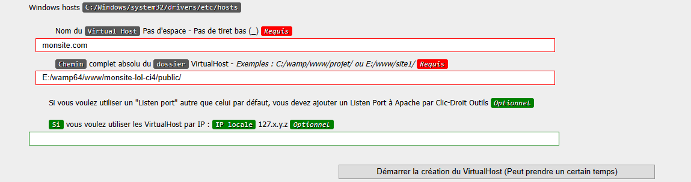

Téléchargez CodeIgniter 4 et le placez dans le dossier " www " qui se trouve dans le dossier
d’installation de Wamp, exemple pour ma part se trouve dans mon disque E:/wamp64/www/.
CodeIgniter peut être télécharger en .zip ou via " Composer " en ligne de commande
CMD à condition que vous avez Composer installer dans votre machine.
Si vous vous connaissez en ligne de commande, ça ne sera pas êtres compliquer.
Il suffit juste de se pointer dans le dossier « www » et
tapez composer create-project
codeigniter4/appstarter nom-de-votre-projet-ou-site,
et " nom-de-votre-projet-ou-site " sera le nom de
votre dossier projet CI4 que vous pouvez le changez selon votre choix de nom de votre projet.
Ex : E:\wamp64\www>composer create-project
codeigniter4/appstarter monsite-lol-ci4. Et ensuite appuyez sur Entrer et composer lance
l’installation automatiquement.
Vous constaterez après installation qu’il y a un dossier qui vient d’être créé dans « www » nommé selon
le nom de votre projet que vous avez choisi.
Remarque : si vous ne voulez pas passer par les patati
patata de ligne de commande. Alors, le mieux c’est
de passer par la première option de télécharger manuellement CodeIgniter 4 en fichier .zip ou autre,
disponible sur le net gratuitement.
Après avoir placer le projet CodeIgniter 4 dans " www ". Démarrez
Wamp et allez vers la page de
Wampserver par votre navigateur sur http://localhost.
Une fois arriver à la page de Wampserver, cliquez sur « Ajoutez un Virtual Host ».
Dans la page Virtual Host. Remplissez les premiers deux formulaires
requis. L’une sera votre nom de site
url que vous pouvez choisir ce que vous voulez (ex : monsite.com). Et l’autre sera le chemin de dossier
de votre projet qu’on vient de créer qui doit se pointer à l’index.php de votre projet (à partir de
CodeIgniter 4 l’index.php se trouve dans le dossier « public »), exemple : "
E:/wamp64/www/monsite-lol-ci4/public/ ". Et cliquez sur « Démarrer la création du VirtualHost (Peut
prendre un certain temps) ».

Pour terminer. Accédez à votre projet en entrant le site url que vous venez de créer selon votre choix, dans la barre d’adresse de votre navigateur après avoir redémarrer Wamp. Selon mon exemple en haut, pour moi c'est " http://monsite.com ".